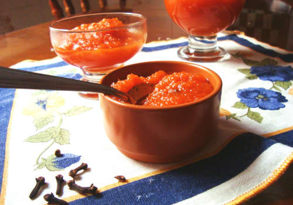

GreEAHEm
Greetings.
/no [non-ominously]
this website is fruit of a nice chat I had with a wizard
a while ago. The idea is to journal for future me.
if you wish, think of here as my home - in Neocities. The reason
you're here, and I'm not, is whatever you come up with. I hope you
find it as comfortable as I do!
being more straightforward...
you'll find many of my likings here !
here are some insights...
"what's up with the name?"
Major breakthrough
abóbora ("ah-bou-bow-rah"), portuguese for *pumpkin*, because
there's a
pumpkin amorphous sweet

that I adore - definitely the best thing in the world. I also love a
variant of Reese's
 we have here, cinnamon rolls, one I've seen people calling
Honey Cakes
we have here, cinnamon rolls, one I've seen people calling
Honey Cakes
 , - and last but not least
, - and last but not least
bolinho de chuva
 .
.
(free translation: lil rain cake, way better than
"dumplings")
after the Great abobora-Purge, I was given the wonderful opportunity to savor Cova Montenapoleone's tiramisu, truly exquisite and remarkable - if you can please try it; and Red velvet cheesecakes, they will forever hold a new, deeply emotional and symbolic value.
What I do
I enjoy doing a multitude of things, but mostly visual art, aaand I
tend to do all of them at the same time, like any normal, sensible
person!
Often practicing:
- - illustration;
- (digital, pixelart and traditional - mostly inkpen)
- - photography;
- - animation;
- - music;
- anything with bass; currently learning MML.
all focusing either on horror or ambient concept art, tho sometimes
I do silly stuff.
I take inspiration mostly from:
Trevor Henderson,
Bonees,
protoartie,
Koruma and
Plastiboo.
there are a *ton* more, but these are the "personality-defining"
ones.
I also enjoy GUMSHOE genre and
investigation RPGs in general - *The Esoterrorists*, *Trail of
Cthulhu*, etc.
most obvious interest should be computer stuff - hardware, cybersec
and machine learning mostly.
The ones I consume:
Movies
big time fan of horror and animation. My top 3 would be
Coraline,
Skinamarink and
Across the Spider-verse. The amount of
shivers i get watching these is insane.
(especially Skinamarink but that's expected)
Music
anything with cool bass. but mainly general rock, post-punk, jazz, shoegaze and indie games OSTs ('go for' is Life is Strange's OST).
I generally prefer independent development.
Games
any with rich story or art design works like neuron activation and tickles the brain like no other. So I'd say, for the moment, previously mentioned, LiS (specially the Captain Spirit standalone), Bloodborne and Fran Bow.
Reading
mostly stuff that relates to the other topics and genres + materials
I can scrap good/fun knowledge from.
My top three... hmmm...
- Angústia
-
DivinaComeddia - Oyasumi Punpun
*Angústia* bends the reading process with it's 'anguishing' structure and plot. For a 1930s book that's pretty rad - specially considering the context Graciliano, the author, wrote it in.
*Commedia* doesn't need much introduction - Dante really earned his name as an anachronic compliment [Dantesque].
*Punpun* was one of the first mangas I read in full, and I really like the way Inio drives the plot and characters. Childhood friends with fucked up lives who end up just being really bad for each other despite their efforts and the uncommon closure tying it all.
also, honorable mention to Nana. No amount of commentary can suffice for the personality change I had.
currently re-reading *House of Leaves*.
That's it!
let's thank Krilly for the awesome bg. they worked very hard
back to the top
")